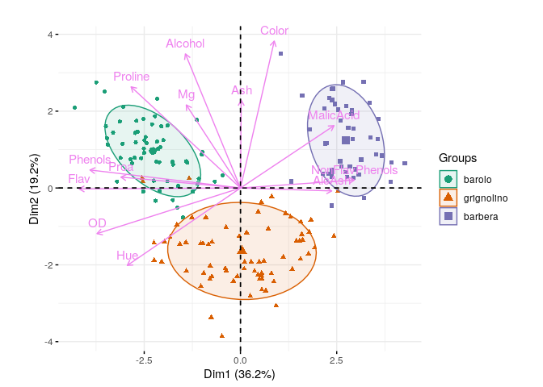
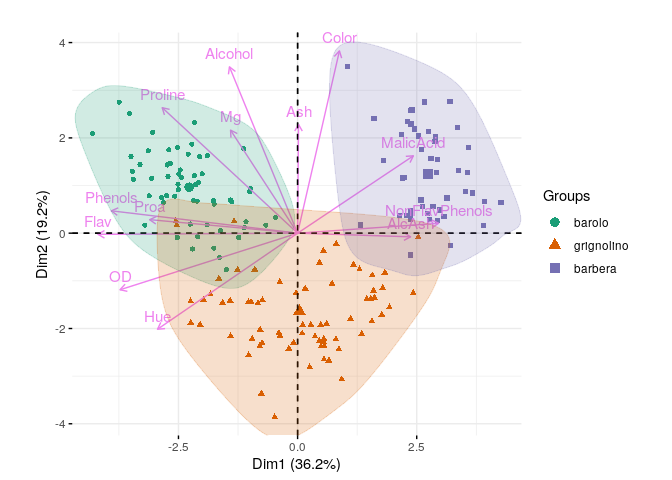

library(tourr)
library(factoextra)
library(pheatmap)
library(tidyverse)We usually think of high-dimensional data as consisting of multiple measures on a group of samples:
Many scientists traditionally think of high-dimensional data as having parallel, continuous measures:
These may be complemented by a smaller number of “metadata” variables, which may be more diverse in type (count, categorical, etc.):
More and more datasets don’t follow this:
We study the rows (samples) using the columns (measures)
But we can also do the opposite!
What does differential success of athletes tell us about the relationship between events?

three components:
Goal: allow automated, systematic search through entire space of projections
animate_xy(laser)apropos("animate_")
## [1] "animate_andrews" "animate_density2d" "animate_depth"
## [4] "animate_dist" "animate_faces" "animate_groupxy"
## [7] "animate_image" "animate_pcp" "animate_scatmat"
## [10] "animate_stars" "animate_stereo" "animate_trails"
## [13] "animate_xy"Alternative: try to find some machinery
dec_mat <- as.matrix(scale(decathlon2[1:10]))
heatmap(dec_mat)pheatmap(cor(dec_mat), cell.width = 10, cell.height = 10)
(see also the corrplot package)
Examples/data from Holmes and Huber (2019)
prcomp (SVD): preferred (also princomp ??)View loadings:
pca_ath <- prcomp(dec_mat, scale=TRUE)
fviz_pca_var(pca_ath, col.circle = "black") + ggtitle("")View scores and loadings:
fviz_pca_biplot(pca_ath)
load("data/wine.RData")
load("data/wineClass.RData")
winePCAd = prcomp(wine,scale=TRUE) ## compute PCA
f0 <- fviz_pca_biplot(winePCAd, geom = "point", habillage = wine.class,
col.var = "violet", addEllipses = TRUE, ellipse.level = 0.69) +
ggtitle("") + coord_fixed() +
scale_colour_brewer(palette="Dark2") +
scale_fill_brewer(palette="Dark2")
## make augmented data we can use
aug_data <- (get_pca_ind(winePCAd)$coord
%>% as_tibble()
%>% mutate(class=wine.class)
)print(f0)
f1 <- fviz_pca_biplot(winePCAd, geom = "point", habillage = wine.class,
col.var = "violet") + ggtitle("") + coord_fixed() +
scale_colour_brewer(palette="Dark2") +
scale_fill_brewer(palette="Dark2")
names(ggplot_build(f1)$data[[1]])
## [1] "colour" "shape" "x" "y" "PANEL" "group" "size"
## [8] "fill" "alpha" "stroke"
f2 <- f1 + ggalt::geom_encircle(data=aug_data,
aes(x=Dim.1,y=Dim.2,group=class,
colour=class,
fill=class),alpha=0.2,
show.legend=FALSE)print(f2)
Buja, Andreas, Dianne Cook, and Deborah F. Swayne. 1996. “Interactive High-Dimensional Data Visualization.” Journal of Computational and Graphical Statistics 5 (1): 78–99. https://doi.org/10.2307/1390754.
Holmes, Susan, and Wolfgang Huber. 2019. Modern Statistics for Modern Biology. 1 edition. Cambridge: Cambridge University Press.